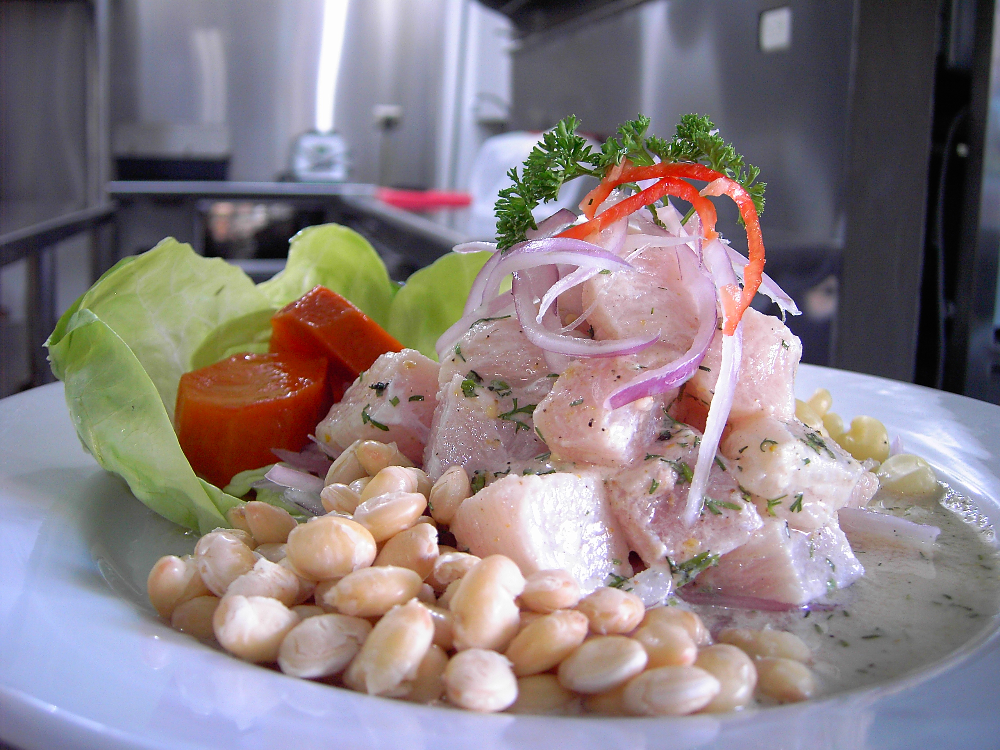

Lasagna
Home

Description
Ceviche, cebiche, sebiche, or seviche[a] (Spanish pronunciation: [seˈβitʃe]) is a cold dish consisting of fish or shellfish marinated in citrus and seasonings. Different versions of ceviche are part of the culinary cultures of various Latin American countries along the Pacific Ocean[4] where each one is native, including Chile, Colombia, Costa Rica, Ecuador, El Salvador, Guatemala, Honduras, Mexico, Nicaragua, Panama, and Peru. Ceviche is considered the national dish of Peru and is recognized by UNESCO as an expression of Peruvian traditional cuisine and an Intangible Cultural Heritage of Humanity.
Ingredients
- ¾ pound mahi mahi fillets, diced, or more to taste
- ⅓ cup lime juice
- ⅓ cup lemon juice
- 1 tablespoon minced jalapeno pepper
- ½ teaspoon salt, or to taste
- 1 pinch dried oregano
- 1 pinch cayenne pepper
- ½ cup diced avocados
- ½ cup peeled and seeded diced cucumber
- ½ cup diced orange segments
- ½ cup chopped fresh chives
- 2 tablespoons radishes, sliced
- 1 tablespoon chopped cilantro
- 1 tablespoon olive oil
Steps
- Stir mahi mahi, lime juice, lemon juice, jalapeno pepper, salt, oregano, and cayenne pepper together in a bowl. Press down fish to completely immerse in liquid. Cover the bowl with plastic wrap and press plastic wrap down so that it is touching the fish. Refrigerate for at least 1 hour, or up to 6 hours.
- Stir avocado, cucumber, orange, chives, radish, cilantro, and olive oil into mahi mahi mixture until completely coated. Season with salt.